After my internship at the county, I decided to create a homelab/prod lab similar to how a standard enterprise might start its network architecture. This features a firewall, VLAN segmentations dividing servers and clients, Active Directory Domain Services, Wazuh security monitoring, and two client VMs acting like employee workstations. Since this prod lab is for demonstration purposes only, I’ll continuously update this site as I learn how modern operations can be built using free or open source softwares.
This EliteDesk features:
My home network is on an unmanaged switch, so I cannot create VLAN segmentation to divide different networks. pfSense allows me to create both VLANs and firewall rules between them. This limits the number of virtual machines I can add to this network, so five running concurrently maximise the use of one desktop.
| Subnet | Purpose |
|---|---|
192.168.1.0/24 | WAN / Home network |
10.10.10.1/24 | Servers |
10.10.20.1/24 | Clients |
| Name | Static/Dynamic | IP | DNS | vCPU | RAM | Storage |
|---|---|---|---|---|---|---|
| pfSense | Static | WAN: 192.168.1.101LAN: 10.10.0.1 | 192.168.1.1 | 1 | 2 GB | 32 GB |
| Windows Server 2025 | Static | 10.10.10.10 | 10.10.10.10 | 1 | 4 GB | 150 GB |
| Wazuh All-in-one Server | Static | 10.10.10.11 | 10.10.10.10 | 2 | 6 GB | 80 GB |
| Windows 11 client | Dynamic | 10.10.20.100 | 10.10.10.10 | 2 | 4 GB | 80 GB |
| Linux / Kali client | Dynamic | 10.10.20.101 | 10.10.10.10 | 2 | 4 GB | 80 GB |
| Total | 8 | 20 GB | 422 GB |
Top-down topology
Throughout creating this environment numerous times, I practice learning how to set up firewall rules, Active Directory DS, VLANs, DHCP rules, and virtualization by using Proxmox as the central host. Because I was guided by both AI and other public resources like Reddit, I was misled numerous times, forcing me to reverse, make exceptions, and — although it sounds like giving up, it helps me cement my understanding — reset and reimage the hypervisor. I now have a guided walkthrough of how to create this exact environment and will continuously update it as I continue to grow my hardware and curiosity.
Hypervisor setup (Proxmox)
Cleaning / wiping the bootable drive
In Windows, I’ve had trouble wiping the USB with both File Explorer and Disk Management. The best application I’ve been using is diskpart. While the USB is plugged in, open CMD and execute:
diskpart # opens diskpart list disk # find USB drive select disk # # select USB clean # wipes USB
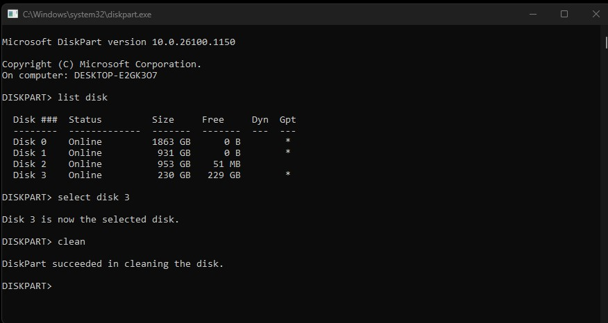
Download the latest Rufus here.
Download the latest Proxmox ISO here.
As a naming convention throughout this article, I will refer to the EliteDesk PC as a hypervisor. On a fresh USB stick, open Rufus and select both your USB and the Proxmox ISO. It’ll show an alert saying DD image writing mode will be used, ignore it. Click “Start” and unplug when completed.
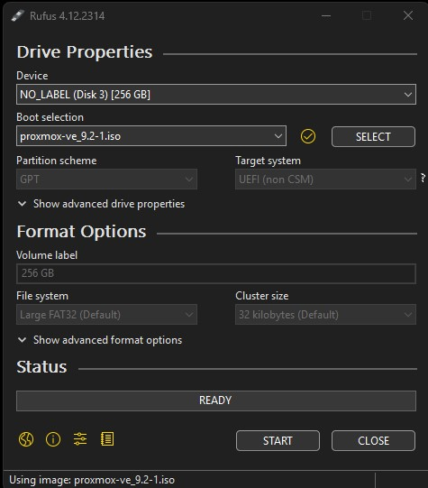
Now in the hypervisor, plug in the bootable USB, monitor, and keyboard, and turn it on. Different computers have different keybinds to open the boot manager: F12, F11, F8, or Esc. At the boot manager, choose your USB drive and go through the installation process until you reach the networking settings.
Hostname: homelab.internal
IP Address: 192.168.1.100 # static IP where you’ll reach your UI
Gateway: 192.168.1.1
DNS Server: 192.168.1.1
.internal.
After installation, open the UI on your desktop at 192.168.1.100:8006
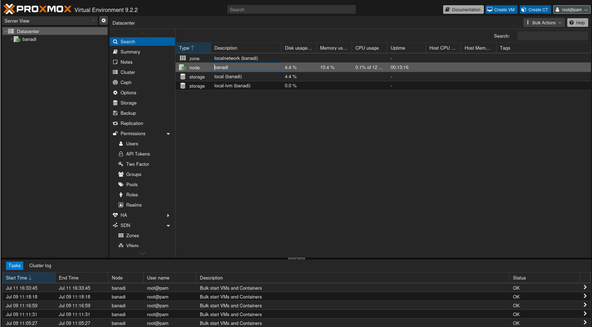
Now verify we updated everything by going to the shell and running:
apt update apt full-upgrade -y
Creating VMs
Create the vmbr1 VLAN network interface:
Datacenter → Node → Network → Create → Linux Bridge Name: vmbr1 VLAN aware: Checked
Start by importing all the ISOs of the machines that will be running in this homelab:
| Machine | Download |
|---|---|
| pfSense Community Edition | pfsense.org/download |
| Windows Server 2025 | microsoft.com — evaluate Windows Server 2025 |
| Ubuntu 26.04 LTS | ubuntu.com/download/server |
| Windows 11 | microsoft.com/software-download/windows11 |
| Kali | kali.org/get-kali |
To import all of the ISO files to Proxmox, go to:
Datacenter → Node → local → ISO Images → Upload
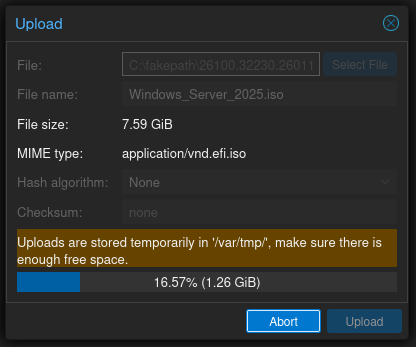
Now on the top right, click Create VM:
| pfSense | WinServer2025 | WazuhServer | WinClient1 | LinuxClient1 | |
|---|---|---|---|---|---|
| General | VM ID: 101Name: pfSense |
VM ID: 102Name: WinServer2025 |
VM ID: 103Name: WazuhServer |
VM ID: 200Name: WinClient1 |
VM ID: 201Name: LinuxClient1 |
| OS | ISO: pfSense.iso |
ISO: Windows_Server_2025.isoType: Microsoft Windows |
ISO: Ubuntu_Server_26-04.isoType: Linux |
ISO: Windows_11.isoType: Microsoft Windows |
ISO: Kali.isoType: Linux |
| System | Defaults | EFI Storage: local-lvmTPM Storage: local-lvm |
Defaults | EFI Storage: local-lvmTPM Storage: local-lvm |
Defaults |
| Disks | 32 GB SSD Emulation: ✓ |
150 GB SSD Emulation: ✓ |
80 GB SSD Emulation: ✓ |
80 GB SSD Emulation: ✓ |
80 GB SSD Emulation: ✓ |
| CPU | Sockets: 1 Cores: 1 Type: host |
Sockets: 1 Cores: 1 Type: host |
Sockets: 2 Cores: 1 Type: host |
Sockets: 2 Cores: 1 Type: host |
Sockets: 2 Cores: 1 Type: host |
| Memory | 2048 |
4096 |
6144 |
4096 |
4096 |
| Network | Bridge: vmbr0 ** |
Bridge: vmbr1VLAN Tag: 10 |
Bridge: vmbr1VLAN Tag: 10 |
Bridge: vmbr1VLAN Tag: 20 |
Bridge: vmbr1VLAN Tag: 20 |
Hardware → Add → Network Device → Bridge: vmbr1 so that we have both interfaces.
Configuring pfSense
Start pfSense.
Please select the WAN interface: vtnet0
Please select the LAN interface: vtnet1
Proceed through the installation until you restart and reach the console.
Configuring the WAN IP address
Set Interface(s) IP address → Enter the number of the interface you wish to configure: 1 (WAN) → Configure IPv4 address WAN interface via DHCP? N → Enter the new WAN IPv4 address: 192.168.1.101 → Enter the new WAN IPv4 subnet bit count: 24 → For a WAN, enter the new WAN IPv4 upstream gateway address: 192.168.1.1 → Should this gateway be set as the default gateway? Y → Configure IPv6 address WAN interface via DHCP6? N → Enter the new WAN IPv6 address: <blank> → Do you want to enable the DHCP server on WAN? N → Do you want to revert to HTTP as the webConfigurator protocol? N
Now the pfSense firewall is on a static IP (192.168.1.101).
Configuring the LAN IP address
Set Interface(s) IP address → Enter the number of the interface you wish to configure: 2 (LAN) → Configure IPv4 address LAN interface via DHCP? N → Enter the new LAN IPv4 address: 10.10.0.1 → Enter the new LAN IPv4 subnet bit count: 24 → For a LAN, press <ENTER> for none: Press enter → Configure IPv6 address LAN interface via DHCP6? N → Enter the new LAN IPv6 address: <blank> → Do you want to enable the DHCP server on LAN? N → Do you want to revert to HTTP as the webConfigurator protocol? N
Now the pfSense firewall is on a static IP (10.10.0.1).
Configuring VLANs
Press 1 to start configurations: Should VLANs be set up now? Y
| Prompt | VLAN 10 | VLAN 20 |
|---|---|---|
| Enter the parent interface name for the new VLAN | vtnet1 | vtnet1 |
| Enter the VLAN tag | 10 | 20 |
Enter the WAN interface name: vtnet0 Enter the LAN interface name: vtnet1 Enter the Optional 1 interface name: vtnet1.10 Enter the Optional 2 interface name: vtnet1.20 Do you want to proceed? Y
Now we need to set up the IP address range and DHCP. Press 2.
| Prompt | OPT1 | OPT2 |
|---|---|---|
| Enter the number of the interface you wish to configure | 3 (OPT1) | 4 (OPT2) |
| Configure IPv4 address via DHCP? | n | n |
| Enter the new IPv4 address | 10.10.10.1 | 10.10.20.1 |
| Enter the new IPv4 subnet bit count (1 to 32) | 24 | 24 |
| For a LAN, press <ENTER> for none | <ENTER> | <ENTER> |
| Configure IPv6 address via DHCP6? | n | n |
| Enter the new IPv6 address. Press <ENTER> for none | <ENTER> | <ENTER> |
| Do you want to enable the DHCP server on the interface? | y | y |
| Enter the start address of the IPv4 client address range | 10.10.10.100 | 10.10.20.100 |
| Enter the end address of the IPv4 client address range | 10.10.10.200 | 10.10.20.200 |
| Do you want to revert to HTTP as the webConfigurator protocol? | n | n |
Now we need to reset the admin account and password by pressing 3.
pfctl -d to disable the firewall. Now we can access the pfSense Web UI at 192.168.1.101:443.
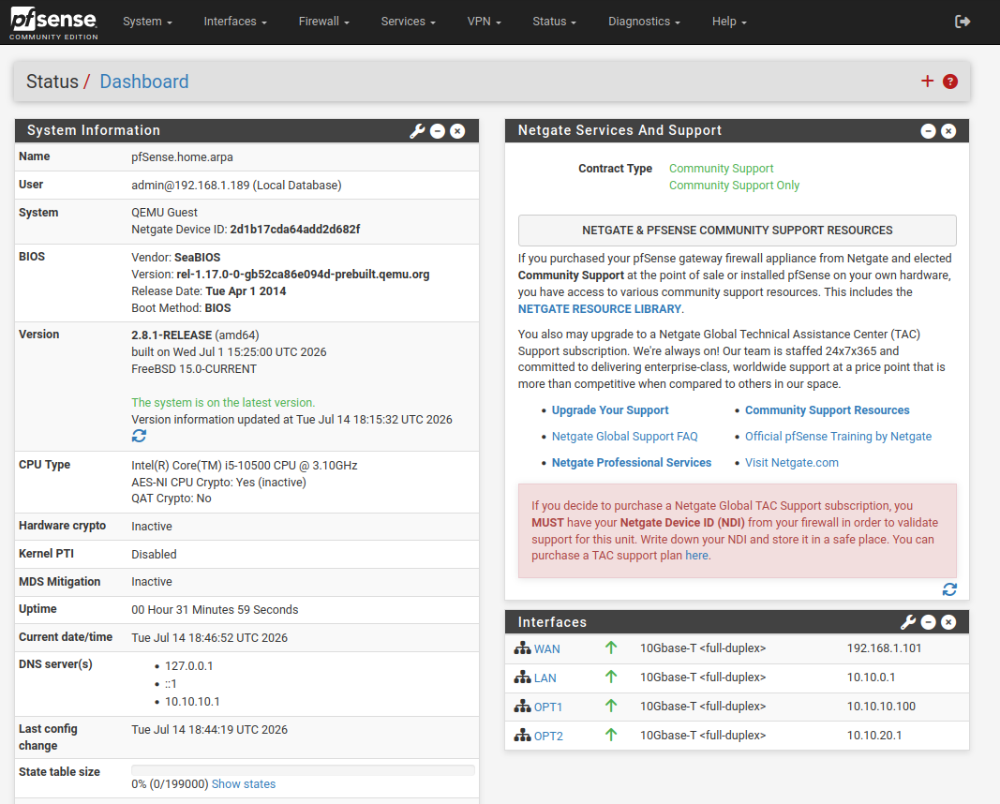
Interfaces → OPT1 and change the Description to SERVERS.
Interfaces → OPT2 and change the Description to CLIENTS.
Interfaces → WAN → uncheck “Block private networks and loopback” and “Block bogon networks.”
Firewall → Rules → WAN → add: pass TCP, source = 192.168.1.x (your PC) OR WAN subnets, dest = This Firewall (self), port 443.
Configuring firewall rules
Firewall → Aliases → Ports
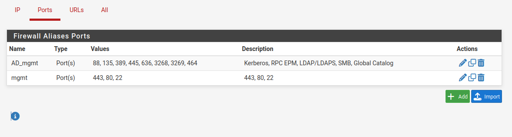
AD_mgmt (Kerberos, RPC EPM, LDAP/LDAPS, SMB, Global Catalog) and mgmt (443, 80, 22).Firewall → Rules
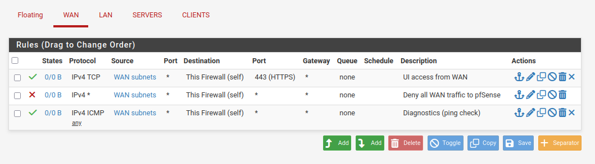
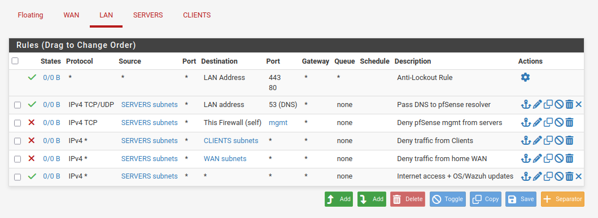
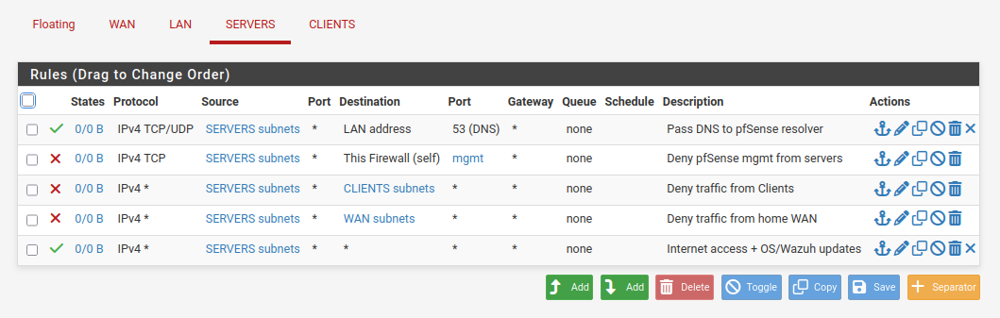
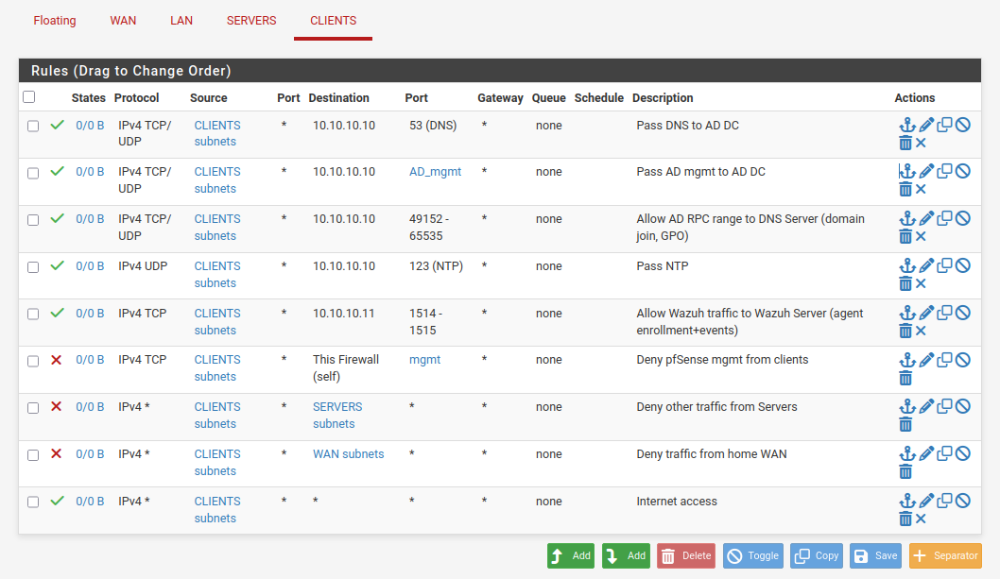
Also add 10.10.10.10 (AD DS) to the default DNS servers for the client subnet:
Services → DHCP Server → CLIENTS interface → DNS Servers field → set to 10.10.10.10 → Save → Apply Changes
Windows Server 2025, AD, and AD DS
Turn on the WinServer2025 VM and go through the installation steps. Choose the Desktop Experience.
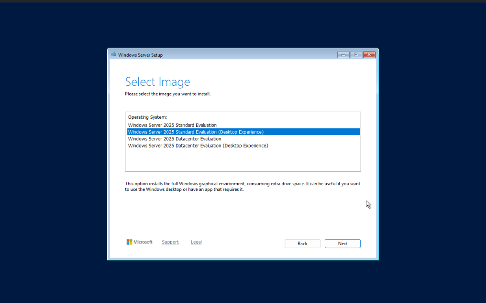
Once finished, we need to set a static IP and gateway.
Open Control Panel → Network and Sharing Center → Change adapter settings → Ethernet
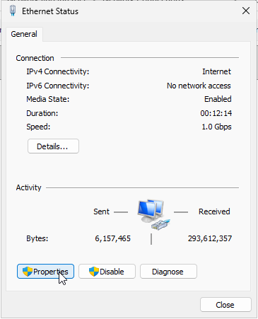
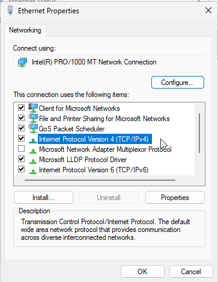
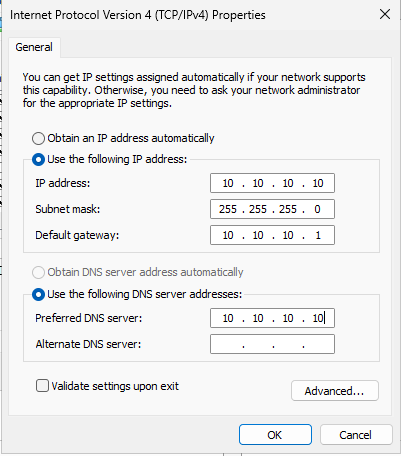
Now the server has a static IP of 10.10.10.10, gateway 10.10.10.1, and DNS 10.10.10.10 (itself).
And we can change the name of the computer by going to Server Manager → Local Server → Computer name
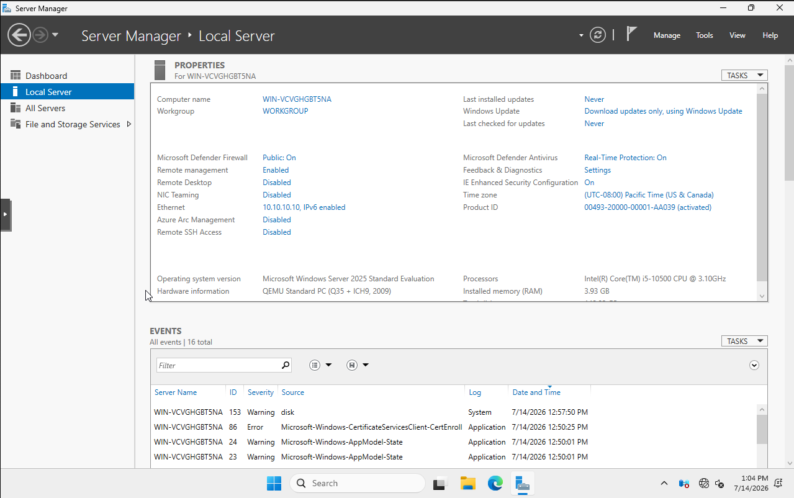
Now go to Change → Computer name: WinServer2025 — then restart to apply changes.
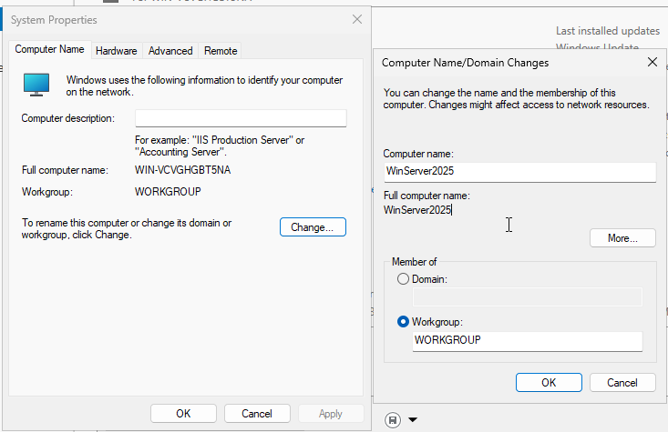
Now we need to create the Domain Controller.
In Server Manager → Manage → Add Roles and Features → go until you reach Server Roles and check “Active Directory Domain Services”. Continue and Install.
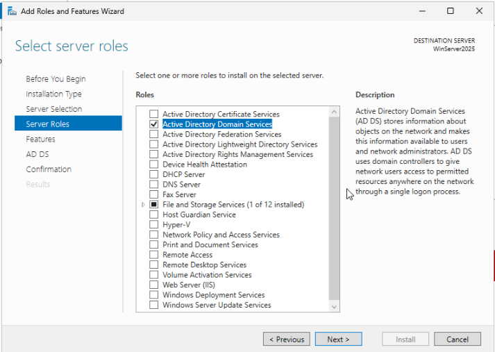
Now promote the server to a domain controller by clicking the flag at the top right in the Dashboard:
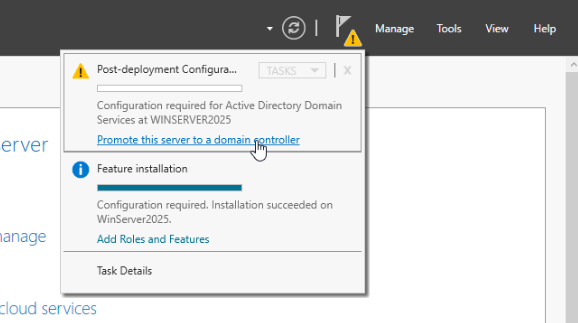
Select “Add a new forest” and use your homelab.internal domain name.
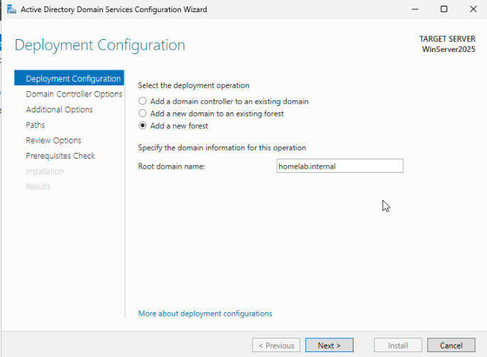
Navigate through the Wizard and hit Install, it’ll reboot after.
DNS Forwarder:
DNS Manager → server → Properties → Forwarders → add 10.10.10.1 (pfSense resolver). This gives the DC external resolution while it stays authoritative for the domain.
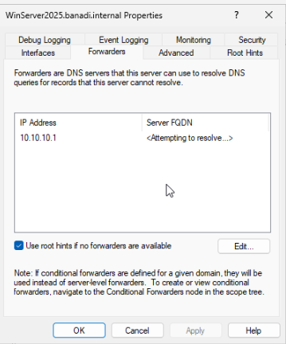
Wazuh all-in-one server
Start the WazuhServer VM and navigate through the installer until you reach Network configuration:
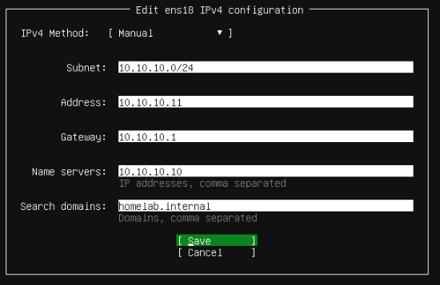
10.10.10.11 on the SERVERS subnet.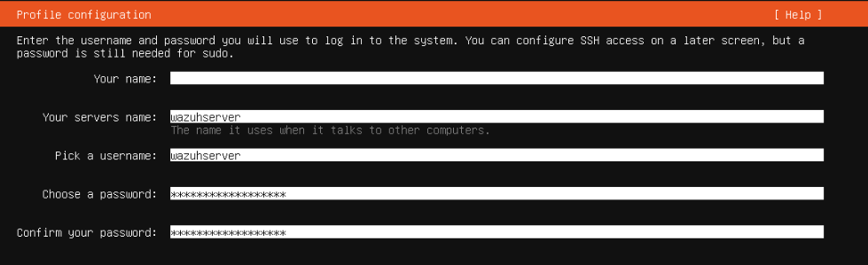
After reboot, remove installation media in Hardware, log in, and run:
sudo apt update && sudo apt full-upgrade -y curl -sO https://packages.wazuh.com/4.14/wazuh-install.sh sudo bash ./wazuh-install.sh -a
Credentials will be posted after installation, but you can also find them here in case you cleared it:
sudo tar -O -xvf wazuh-install-files.tar \ wazuh-install-files/wazuh-passwords.txt
Now on the WinServer2025 VM, navigate to https://10.10.10.11 and change the password, which must fit the requirements:
- Between 8–64 characters
- Contain at least one upper and lowercase letter
- A number
- A symbol of either
.*+?-
Client VMs
6aWinClient1
Start the WinClient VM.
- When asked for product key, select “I don’t have a product key”.
- Select Windows 11 Pro.
- Name the device:
WinClient1 - Set up for work or school.
- When it asks to sign into Microsoft, hit
Shift + F10and runstart ms-cxh:localonly - Who’s going to use this PC?:
Employee 1· Password:employee1 - For all of the security questions, I put
employee1as the answer.
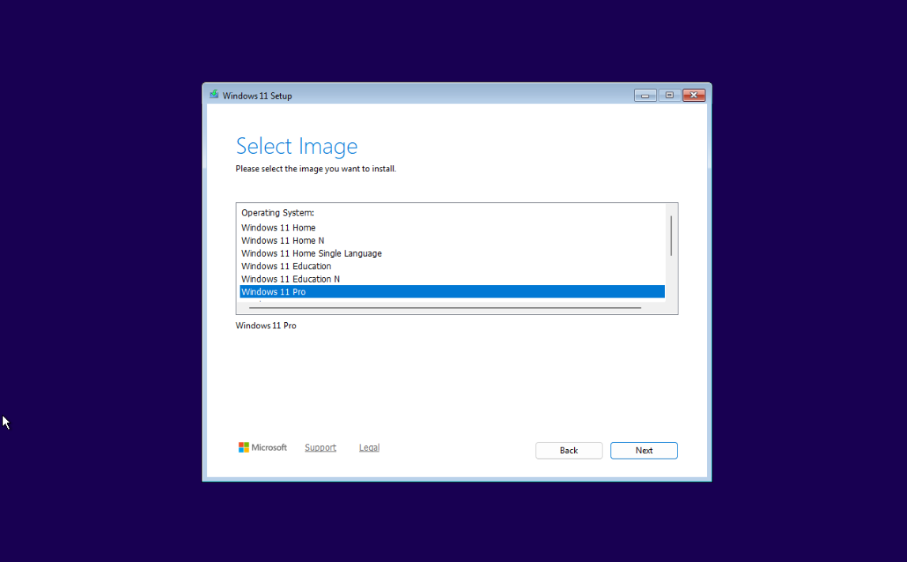
Verify that DNS is set:
Resolve-DNSName homelab.internal
6bLinuxClient1
Start LinuxClient1.
- Hostname:
LinuxClient1 - Domain name:
homelab.internal - Username:
employee2
After going through the wizard, reboot and then run:
sudo apt update && sudo apt full-upgrade -y
Wazuh agents
In the WinServer2025 VM, log into the Wazuh dashboard and go to + Deploy new agent.
For WinClient1 and WinServer2025:
- Select MSI 32/64 bits.
- Server address:
10.10.10.11 - Agent name:
WinClient1 or WinServer2025 - In the respective VM, run PowerShell as administrator and run the command.
- Run
NET START Wazuh
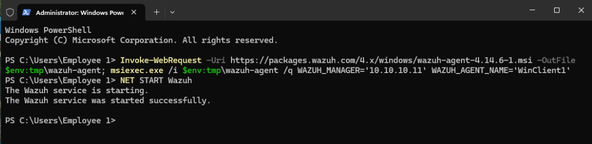
For LinuxClient1:
- Select DEB amd64.
- Server address:
10.10.10.11 - Agent name:
LinuxClient1 - Copy the command to the terminal.
- Run
sudo systemctl daemon-reload - Run
sudo systemctl enable wazuh-agent - Run
sudo systemctl start wazuh-agent
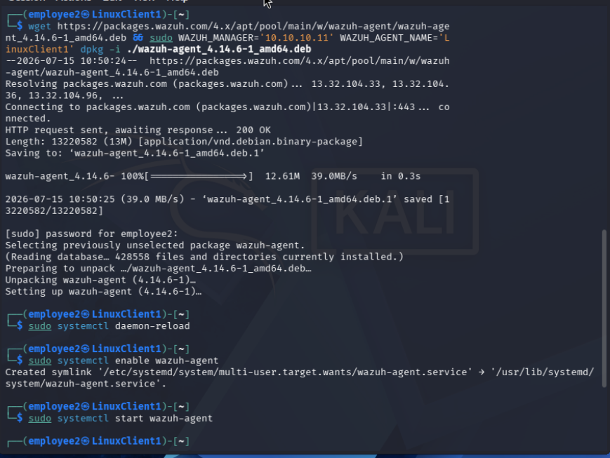
Now both devices should be visible in the Wazuh Agents dashboard.
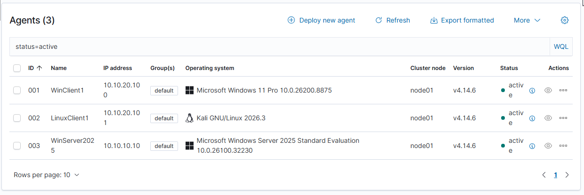
Future implementations
- Separate admin and user privileges for both Windows and Linux client.
- Send client telemetry to Wazuh server.
- Start Group Policy and configure permissions for clients.
- Utilize a UTM.
- Utilize an endpoint management platform to manage applications installed on clients.
- Utilize a managed switch to expand the homelab by adding more VMs through other devices like a RPi.